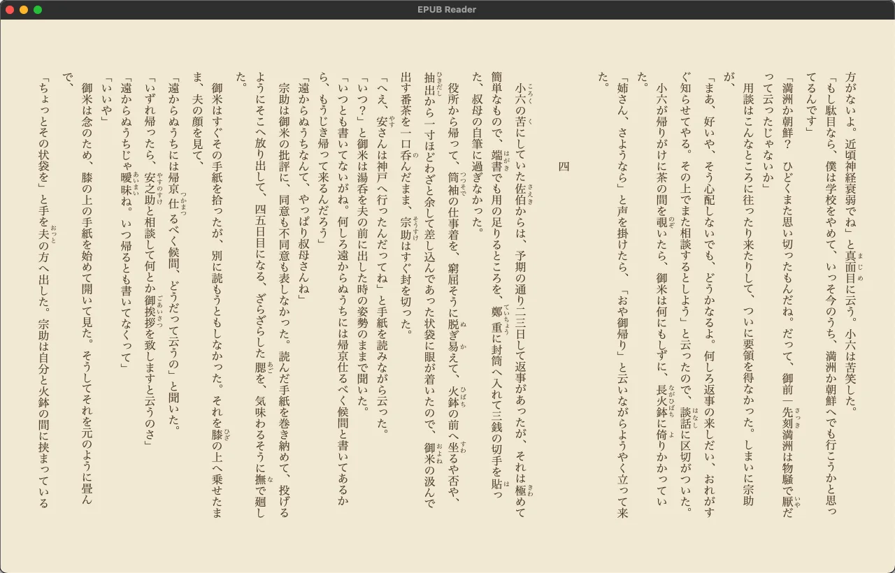
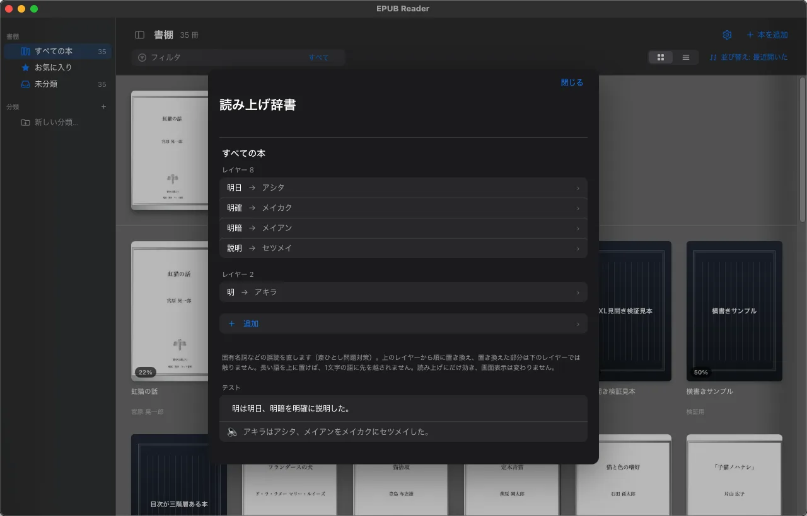
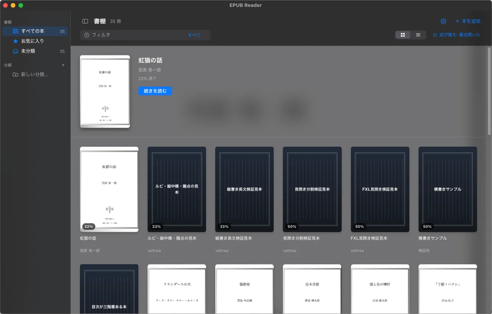

読みやすさ優先（friendly）
EPUB 側の指定の粗さを吸収して、「期待どおりの見え方」に寄せます。
- 画像を面いっぱいに表示する
- 表紙・口絵・章扉といった画像だけのページは列レイアウトに載せず直接描画し、Kindle 風に自動で見開きへ組む
preserveAspectRatio="none"で潰れた SVG 表紙の比率を是正する- 縦書き指定が欠けた本を、EBPAJ 由来のクラスや OPF の
primary-writing-modeから推測して補う
macOS 向け・EPUB リーダー
日本語の縦書き EPUB は、長いあいだ参照実装の乏しいまま作られてきました。 このリーダーは、粗い指定を黙って吸収して読める姿に寄せる一方、 知りたいときには壊れたまま見せます。読み上げ、音声の書き出し、朗読動画まで込みで。
本の粗さを吸収して読む日と、粗さそのものを確かめたい日は違います。ひとつのアプリで両方を切り替えます。
EPUB 側の指定の粗さを吸収して、「期待どおりの見え方」に寄せます。
preserveAspectRatio="none" で潰れた SVG 表紙の比率を是正するprimary-writing-mode から推測して補う補正を全部止めて、EPUB に書いてある指定どおりにエンジンが描いた姿を見ます。歪んだ表紙も、効いていない指定も、そのまま出ます。

原稿をチェックする最高の方法は、読み上げソフトと組み合わせることでした。だから読み上げにはかなり力を入れています。
日本語の TTS では、短い語から優先してマッチするという挙動が問題になります。 登場人物の「明」をアキラと読ませたくて登録すると、 明日・明確・明暗・説明まで、ぜんぶアキラに化けます。
読み上げエンジン側のユーザー辞書にはこれを止める仕組みがないので、
語ごとに優先順位（レイヤー 1〜10）を持つ読み辞書をアプリに内蔵しました。
大きいレイヤーから順に置換し、置換済みの部分は下のレイヤーでは触りません。
名前を低いレイヤー、その作品に出てくる熟語を高いレイヤーに置けば、
熟語が先に固まり、裸の「明」だけが読み替わります。
正規表現（第(\d+)話 のようなパターン）にも対応します。
辞書は「すべての本」と「この本だけ」に分かれます。 登場人物の名前のようにその作品でしか使わない読みを、ほかの本に持ち込まずに登録できます。 登録する画面と登録済みを見る画面は別々なので、一語入れるのに長い一覧を通る必要はありません。 前に登録した語をもう一度登録しようとすると、そのときの読みが入った状態で開きます。

applyRules で読み上げに渡る文字列を見て検算する——
この往復が回せるので、1 冊分の辞書をそろえるのは思ったほどの手間になりません。
手順はマニュアル八章に書いてあります。
読むだけで終わらせず、持ち出せる形にします。録画ソフトも動画編集ソフトも要りません。
通勤電車で自分の書いた小説を聴く、グループで作っている作品を隙間時間でチェックする。 いま読んでいるセクションを丸ごと一つの音声にまとめます。
読んでいる箇所だけが発光する縦書きの朗読動画を書き出します。 自分の作品を動画で公開するのが、ぐっと手軽になります。
音声も動画も、書き出しはアプリの中で完結します。別の道具を入れる必要はありません。
手を止めずに読む、聴きながら眠る。読書のかたちに合わせた小さな道具を用意しています。
10〜90 秒の間隔、または任意の秒数で自動的に次のページへ。読み上げ中は送らず、本の終わりで自分から止まります。
15〜120 分後に読み上げを停止。満了時に Mac をスリープ、あるいはシャットダウンまで選べます（シャットダウンは 30 秒の猶予つきで、起きていれば取り消せます）。
本文で文を選んで右クリックすれば、その一文がそのまま一覧に並ぶしおりになります。本文検索は ⌘F。
本が増えても探せるように。そして、見せたくない本を確実に見せずに済むように。
蔵書には人に見せられない本が混じります。仕事で預かったデータ、家族には見せたくない本、画面共有の相手には関係のない本。 そこで書棚そのものを複数持てるようにしました。
「隠す」機能にしなかったのは、隠す作りだと解除し忘れ・表紙のキャッシュの残りといった経路をひとつ見落とせば漏れるからです。 読む先を切り替える作りなら、読んでいないものは表示できません。EPUB ファイル自体は書棚を消しても消えません。

ここから先はこのアプリ自体の作りの話です。マニュアルとコードの食い違いを機械で見つける仕組みと、GUI アプリを座標クリックなしで自動テストする仕組みを同梱しています。
文書は書いた時点では正しくても、コードだけが進むと黙って嘘になります。 それを人の目で防ぐのは無理なので、機械で突き合わせています。
EPUB_READER_TESTBUS=1 を付けて起動したときだけです使い方は DEVELOPMENT.ja.md の 「テストバス」の節にあります。
ビルド済みのアプリを GitHub の Releases に置いてあります。DMG を開いて epub-reader.app を Applications へドラッグしてください（0.2.0 以前は ZIP です）。
Apple Developer アカウント（年 $99）を使わない ad-hoc 署名なので、初回だけ macOS の警告を越える操作が要ります。 一度許可すれば以降はそのまま起動します。
xattr -dr com.apple.quarantine /Applications/epub-reader.app個人的に使うために作ったもので、テストが行き届いていない部分もあります。 何でもかんでも製品並みに仕上げてからでないと出せない、というものでもないと考えて公開しています。 基礎機能だけでも十分に使えるはずです。
Windows / Linux 向けのバージョンを別途制作中です。
{kind=link}
{kind=link}
{kind=link}